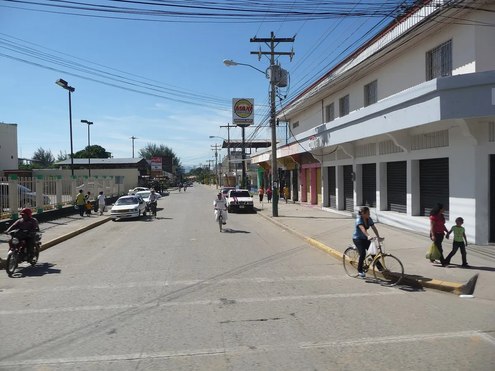

OKpolítico
OKpolíticoAsesinan a 12 personas en Yoro, Honduras, zona con alta presencia de narcotráfico

ACTUALIZADO · En Culiacán, Sinaloa, un ataque armado dejó tres muertos en distintos puntos de la ciudad el 26 de noviembre, generando un operativo de búsqueda por parte de las autoridades estatales y federales.
Compartir por WhatsAppActualización 10:29 h
El 26 de noviembre, tres hombres fueron asesinados en distintos sectores de la ciudad de Culiacán. En la colonia Libertad, un hombre llamado Ricardo “N” fue disparado por dos personas armadas mientras caminaba por la calle Constituyente Carlos María Esquerro. En la colonia Felipe Ángeles, dos jóvenes conversaban frente a un domicilio cuando fueron alcanzados por disparos; uno de ellos, Jaziel “N”, de 20 años, falleció y el otro fue trasladado a hospital con lesiones graves. En la colonia Miguel Hidalgo, el encargado de un minisúper, Alonso “N”, de 64 años, fue abatido por un atacante joven dentro del establecimiento.
El ataque se produjo en un contexto de alta violencia en Sinaloa, donde las autoridades han señalado la presencia de grupos del crimen organizado que compiten por el control de rutas de tráfico y de la zona. El operativo desplegado incluye a la Guardia Nacional, la Policía Estatal y la Fiscalía General del Estado, con el objetivo de localizar a los agresores y prevenir futuros incidentes.
✉️ Recibe lo importante del día en tu correo. Suscríbete gratis →Las autoridades han declarado que no se ha identificado aún la motivación específica del ataque, pero se sospecha que puede estar vinculado a la disputa territorial entre facciones del narcotráfico que operan en la región. Se ha reforzado la presencia policial en las calles y se han instalado cámaras de vigilancia en puntos críticos.
Se pidió a la ciudadanía que colabore con la policía y que reporte cualquier actividad sospechosa. Asimismo, se anunció la creación de una comisión interinstitucional para coordinar la respuesta a la violencia y fortalecer la seguridad pública en la zona.
El caso sigue en investigación y las autoridades continúan con el operativo para capturar a los responsables. Se espera que las autoridades presenten cargos en los próximos días, según la Fiscalía General del Estado.
Actualización 11:58 h
En la madrugada del miércoles 18 de noviembre, cuatro escenas de violencia simultánea se registraron en las aldeas de Vallecillos y Pacayales, en el municipio de Yorito, departamento de Yoro. Los hechos culminaron con la muerte de 12 personas, según la Policía Nacional.
La masacre ha generado una fuerte reacción en la zona. Se han difundido mensajes y videos en redes sociales relacionados con los hechos, donde se sugiere que las víctimas podrían haber proporcionado información a las autoridades y se advierte que la violencia no se detendrá.
Las autoridades hondureñas interpretan la tragedia como una posible represalia a los recientes operativos policiales en la región. La Secretaría de Estado en el Despacho de Seguridad desplegó entre 400 y 500 policías y militares en Yoro y reforzó las unidades de investigación, mientras la Dirección Policial de Investigaciones y el Ministerio Público trabajan en la identificación de los responsables.
El gobierno ha condenado los hechos y anunció que intensificará las operaciones en Yoro para localizar y neutralizar a los responsables. Se espera que las investigaciones concluyan en las próximas semanas, con la posibilidad de que se presenten nuevas medidas de seguridad en la zona.
La comunidad de Yorito permanece en estado de alerta y exige respuestas claras sobre la causa de la violencia y la protección de sus habitantes. Los funcionarios locales y nacionales están coordinando esfuerzos para prevenir futuros ataques y garantizar la seguridad de la población.
Actualización 23:06 h
El 18 de noviembre, en la madrugada, cuatro comunidades montañosas del departamento de Yoro fueron blanco de ataques armados que resultaron en la muerte de 12 personas, entre ellas mujeres, hombres y menores. Las víctimas fueron encontradas en sus hogares y, según la Policía Nacional, los hechos ocurrieron casi simultáneamente, lo que indica una coordinación de los agresores.
Tras el informe de la Policía, el presidente Nasry Asfura ordenó intensificar los operativos en la zona.
Actualización 21:26 h
En la madrugada del 18 de noviembre, cuatro tiroteos simultáneos en distintas comunidades de Yorito, Yoro, dejaron como saldo al menos 12 muertos. Los hechos ocurrieron en la aldea El Pacayal y en Vallecillo.
El contexto de la violencia se remonta a las recientes operaciones del gobierno de Nasry Asfura.
El presidente Asfura condenó con firmeza la masacre y aseguró que los responsables serán llevados ante la justicia. El gobierno ha prometido intensificar los operativos. La Policía Nacional ha iniciado investigaciones y ha pedido a la comunidad que brinde información.
Las autoridades han declarado que las fuerzas de seguridad actuarán con toda la contundencia necesaria para identificar a los perpetradores y que la violencia no quedará impune, mientras la comunidad local y los organismos internacionales vigilan la evolución de la situación.
El incidente ha generado alarma en la región y ha puesto de relieve la necesidad de reforzar la seguridad y la justicia en zonas vulnerables del país.
Actualización 19:49 h
El 18 de noviembre, la Policía Nacional informó que cuatro ataques armados en distintas comunidades de Yoro, entre ellas Yorito, El Pacayal y Vallecillo, resultaron en la muerte de 12 personas. Los hechos ocurrieron alrededor de las 02:00 h y se registraron en zonas rurales a media hora del centro urbano del municipio.
El Cartel del Diablo, una organización criminal vinculada a la violencia en el norte de Honduras, se atribuyó la autoría de los ataques. La Policía Nacional incrementó la recompensa por su captura a 200 mil dólares.
Se declaró la intervención de emergencia en Yoro y se ordenó a las fuerzas de seguridad actuar con contundencia para identificar y someter a los responsables ante la ley. La intervención incluye patrullajes reforzados y la presencia de la Policía Nacional en las zonas afectadas.
El gobierno hondureño ha intensificado los operativos en la región, mientras la Fiscalía y la Medicina Forense están a cargo de las investigaciones y el levantamiento de los cuerpos. Se espera que las autoridades publiquen un informe oficial en las próximas horas para esclarecer la motivación y los autores de los ataques.
El caso destaca la creciente violencia en el norte de Honduras, donde los carteles de narcotráfico compiten por el control territorial y a menudo recurren a la violencia indiscriminada para intimidar a la población y a las autoridades. La intervención de emergencia busca restablecer el orden y proteger a los ciudadanos de futuras agresiones.
Actualización 16:55 h
El 18 de noviembre, la madrugada de ese día, cuatro ataques armados se registraron en el departamento de Yoro. Las autoridades locales confirmaron que al menos 12 personas perdieron la vida. Los hechos ocurrieron a las 2 a.m. y se reportó que los atacantes dispararon indiscriminadamente a los residentes de las zonas afectadas.
El móvil del crimen se vincula al Cártel del Diablo, una organización criminal que ha estado involucrada en varias masacres y secuestros en la región. En la madrugada, una cuenta de Facebook identificada como JT TJ, atribuida al grupo, publicó videos que mostraban los cuerpos de las víctimas y mensajes de amenaza contra quienes supuestamente colaboraron con la Policía. El comisionado de la Policía Nacional, Lenin Pineda, confirmó que las muertes fueron parte de una represalia del cartel.
El contexto de la violencia se remonta a la reciente intensificación de la lucha contra el crimen organizado en Honduras. El Cártel del Diablo ha sido señalado como responsable de cuatro masacres en Yoro, lo que llevó a la Policía a elevar la recompensa por su captura a 200 mil dólares.
Las autoridades han declarado un estado de emergencia en Yoro y se ha propuesto la imposición de un toque de queda de 90 días para contener la violencia. Además, la Policía Nacional ha aumentado su despliegue en la zona y ha solicitado la colaboración de la comunidad para identificar a los perpetradores. El presidente del país ha prometido una respuesta firme y la implementación de medidas de seguridad adicionales en las regiones más afectadas.
La investigación sigue en curso. Se espera que la Policía Nacional y la Fiscalía presenten un informe detallado sobre los hechos y la identidad de los responsables en las próximas 48 horas. Mientras tanto, la comunidad local permanece en alerta.
La violencia en Yoro destaca la urgente necesidad de fortalecer la cooperación entre las fuerzas de seguridad y la ciudadanía, así como de abordar las causas profundas del crimen organizado en Honduras.
Actualización 14:08 h
El 18 de noviembre, la Policía Nacional reportó cuatro ataques armados en la madrugada del municipio de Yorito, departamento de Yoro, que dejaron 12 personas fallecidas, entre ellas la regidora municipal y defensora indígena Delma Yolanda Olvera. Los hechos ocurrieron en las comunidades rurales de Vallecillos y Pacayal, donde se registraron escenas de violencia en viviendas y un campo de fútbol.
Las autoridades señalan que la regidora había denunciado amenazas de muerte vinculadas a su labor de defensa territorial del pueblo tolupán. El asesinato de Olvera, junto con la muerte de otros civiles, reaviva la preocupación por la seguridad de los defensores de territorios ancestrales.
El contexto de la violencia en Yoro se enmarca en un aumento de los delitos múltiples en Honduras. La masacre de Yorito se suma a una serie de incidentes que han llevado a la discusión sobre la necesidad de un estado de excepción focalizado y la intervención de fuerzas armadas y judiciales para combatir las estructuras criminales que operan en la región.
El gobierno central y el Congreso han convocado reuniones de emergencia. Se contempla la posibilidad de declarar un estado de excepción focalizado en Yorito y municipios vecinos, con el objetivo de intensificar la presencia policial y las operaciones de investigación.
El caso sigue bajo investigación. La Policía Nacional y la Dirección Policial de Investigaciones continúan recopilando pruebas y entrevistando a testigos para determinar la coordinación entre los cuatro episodios y la posible participación de grupos criminales. La comunidad y las organizaciones de derechos humanos exigen una respuesta rápida y la protección de los defensores territoriales.
La masacre ha generado alarma internacional y ha puesto de relieve la vulnerabilidad de los líderes indígenas en Honduras, así como la necesidad de fortalecer la seguridad y la justicia en las zonas afectadas.
Actualización 12:15 h
El 18 de noviembre, la Policía Nacional confirmó la muerte de 12 personas en cuatro escenas violentas registradas durante la madrugada en el municipio de Yorito, en el departamento de Yoro. Los hechos ocurrieron en las aldeas de Vallecillo y Pacayales, donde equipos de la Policía y representantes del Ministerio Público están realizando diligencias para esclarecer las circunstancias de los crímenes.
Entre las víctimas se encuentran mujeres, niños y la regidora municipal Yolanda Olvera, quien murió en Pacayales. La Policía ha señalado que, aunque todavía no dispone de elementos concluyentes, se están investigando posibles vínculos entre las víctimas y la alcaldía municipal, así como la posible participación de organizaciones criminales.
El presidente del Congreso Nacional, Tomás Zambrano, reaccionó a los ataques, atribuyéndolos a una posible represalia de organizaciones criminales contra las acciones de seguridad del gobierno en la zona. Zambrano pidió que las fuerzas de seguridad actúen con contundencia para identificar a los responsables y garantizar que el crimen no quede impune.
La Policía Nacional ha movilizado equipos especializados desde San Pedro Sula y ha iniciado un perfilamiento de las víctimas para determinar sus antecedentes y posibles motivaciones. Hasta la fecha, no se han reportado capturas ni se ha confirmado la participación del Cartel del Diablo, aunque el Cartel del Diablo ha enviado un audio en el que se atribuye la masacre y amenaza con más muertes.
Las autoridades continúan investigando los posibles motivos de los ataques, ya sea conflictos personales, represalias de grupos criminales o acciones relacionadas con la administración local. Se espera que la investigación arroje luz sobre la dinámica de violencia que ha afectado a Yorito y que se tomen medidas para prevenir futuros incidentes.
Actualización 12:03 h
El 18 de noviembre de 2026, la Policía Nacional de Honduras registró cuatro disparos simultáneos en el norte del país, en el departamento de Yoro. En Vallecillo murieron nueve personas y en Pacayales tres, sumando 12 víctimas, entre las que se incluyen hombres, mujeres y niños, según el subcomisionado de la Policía Edgardo Barahona.
El sector donde se produjeron los hechos está dominado por una banda criminal conocida como el Cartel del Diablo. Las autoridades han iniciado una persecución y ya han detenido a 22 presuntos integrantes de la organización, entre ellos la madre y una hermana menor del líder Esteban Gumercindo Ferrera.
El ataque ocurrió dos días después de que un audio, difundido en redes sociales y atribuido al Cartel del Diablo, amenazara a comerciantes y a personas que proveen alimentos o bebidas a policías y militares en la zona. El mensaje, que se volvió viral, generó alarma entre la población local y se considera un posible desencadenante de la violencia.
El subcomisionado Barahona indicó que, aunque no se han confirmado los nombres de todas las víctimas, se sospecha que entre ellas se encontraba una concejala municipal de Yorito, su esposo y su hijo. La Policía continúa investigando el perfil de las víctimas para determinar si sus actividades pudieron haberlas expuesto a la banda.
Las autoridades han pedido a la población que reporte cualquier actividad sospechosa y han reforzado la presencia policial en los puntos críticos de Yoro. Se espera que la investigación avance a la brevedad y que se identifiquen los responsables, mientras el gobierno nacional mantiene su compromiso de combatir la delincuencia organizada en el país.
Reacciones oficiales: el presidente de Honduras, quien se encuentra en la capital, emitió un comunicado pidiendo calma y reafirmando la voluntad del gobierno de garantizar la seguridad ciudadana. La Fiscalía Nacional ha iniciado una investigación preliminar y ha solicitado la colaboración de las comunidades locales para identificar a los implicados.
En el contexto más amplio, Yoro ha sido uno de los departamentos con más masacres en 2026, y la violencia de grupos criminales sigue siendo una amenaza constante para la estabilidad social y la gobernabilidad del país.
Actualización 10:16 h
El 18 de noviembre, la madrugada de ese día, se registraron cuatro hechos violentos en el municipio de Yorito, departamento de Yoro. En total, las masacres dejaron un saldo de 12 personas muertas, entre ellas la regidora municipal Yolanda Olveda.
El contexto inmediato señala que el presidente del Congreso Nacional, Tomás Zambrano, pidió intervenir Yoro tras los hechos y solicitó una respuesta firme de las fuerzas de seguridad.
La presencia de regidores y funcionarios locales entre las víctimas subraya la gravedad del ataque.
Las autoridades han iniciado una investigación para determinar los móviles de los ataques y establecer la relación entre los hechos. El presidente del Congreso ha prometido que la justicia no quedará impune y ha instado a las fuerzas de seguridad a actuar con contundencia. La policía nacional ha confirmado el número de muertos y ha señalado que la investigación sigue en curso, sin revelar aún los nombres de los responsables. La comunidad local y los familiares de las víctimas esperan respuestas y medidas de protección para evitar nuevas tragedias.
La situación sigue en evolución, con la policía y el Congreso coordinando esfuerzos para identificar a los culpables y garantizar la seguridad de la población. Se espera que las investigaciones arrojen más detalles sobre la motivación en los próximos días.
En la madrugada del 18 de noviembre, cuatro escenas de violencia armada dejaron al menos 12 muertos en el municipio de Yorito, en el departamento de Yoro. Los hechos ocurrieron en las comunidades rurales de Vallecillos y Pacayales, donde la policía reportó ataques en viviendas y en un campo de fútbol.
El portavoz de la Policía Nacional, Edgardo Barahona, indicó que las víctimas fallecieron en episodios distintos en Vallecillos y Pacayales; entre los fallecidos se encuentran la regidora municipal Yolanda Olvera, su hija y su compañero de hogar. Las autoridades confirmaron que los ataques fueron directos.
El contexto de la violencia en Yoro se intensifica luego de que el Cartel del Diablo se atribuyera la masacre de las 12 personas y lanzara amenazas sobre nuevos ataques. Aunque el gobierno hondureño mantiene campañas de seguridad en la zona, la organización criminal asegura mantener el control de la región.
El diputado Tomás Zambrano ordenó una intervención total de las fuerzas de seguridad en Yoro para capturar a los responsables y aseguró que no se puede permitir que la violencia continúe impune. La policía continúa las diligencias, mientras se espera que la Fiscalía y Medicina Forense concluyan el levantamiento de los cuerpos.
Actualmente, la comunidad de Yorito se encuentra en estado de alerta y la policía mantiene patrullajes reforzados para intentar identificar a los perpetradores. La situación refleja la grave crisis de inseguridad que enfrenta Honduras en diversas regiones del país.
Actualizado 09:20 h (centro de México). Información en desarrollo; OKpolítico ampliará esta nota con datos verificados y el video explicativo.
Contexto
La masacre en Yorito, Yoro, ocurre en un escenario de creciente inseguridad en Honduras, donde grupos delictivos disputan el control territorial. En este evento, el Cartel del Diablo se adjudicó los ataques directos contra civiles, incluyendo a la regidora municipal Yolanda Olvera y su familia. La violencia en esta región refleja la lucha constante entre organizaciones criminales y las fuerzas de seguridad del Estado, las cuales han sido llamadas a intervenir de manera urgente para frenar la impunidad.
Este suceso es relevante debido a la vulnerabilidad de las autoridades locales frente al crimen organizado y la capacidad de grupos criminales para desafiar el orden público. La intervención solicitada por el diputado Tomás Zambrano busca contener la expansión de estas bandas, que amenazan con nuevos actos violentos. La situación mantiene a la población en alerta máxima, mientras las autoridades intentan retomar el control en las comunidades rurales afectadas por estos enfrentamientos.
Videos en redes
Videos publicados en X y difundidos por medios; OKpolítico no muestra imágenes de personas fallecidas.
Sigue viendo
- 📺 Detienen a Lili Campos: el esquema de 62 mdp en lavado fantasma
- 📺 La matanza de Aguas Blancas: el expediente de 1995
- 📺 DEA acusa nexos políticos-cárteles: ¿cooperación o injerencia?
- 📰 Muere Peter Hernandez, padre de Bruno Mars, a los 74 años
- 📰 Morena definirá el miércoles estrategia para renovar presidencia del INE ante falta de acuerdos
- 📰 Petro advierte sobre golpe de Estado en Colombia tras denuncias de senadores de oposición
Con información de
Infobae América · Proceso Digital · Diario Tiempo de Honduras · www.laprensa.hn · Infobae · HCH.tv · La Prensa · ElHeraldo.hn · El Heraldo · Soy502 · oncenoticias.hn · EFE · Diario La Tribuna · Tiempo · Noticias 24/7 · www.radiohrn.hn · América Económica · AP News · iNoticias · Facebook · ICNDiario · Televisión Nacional de Honduras · Netnoticias · DW · El Universal · www.noroeste.com.mx · Potosinoticias.com · vivavoz.com.mx